Автоматический поиск неэффективностей#
Автоматический поиск неэффективностей - это набор методов, применяемых для быстрого выявления стандартных проблем и ошибок бизнес-процесса. Является аналогом процедуры скрининга, результат выполнения которого заключается в оценке наличия или отсутствия в каждом этапе проблемной зоны и потенциального эффекта ее устранения для возможности выставления приоритетов в дальнейшем анализе причин возникновения найденных проблем.
Идея для анализа бизнес-процесса
Много переделок и повторений. Ситуация, когда в ходе бизнес-процесса задачи многократно возвращаются исполнителям для доработки, исправления, сверки. В среднем на такие переделки может уходить до 30% рабочего времени сотрудников. Это приводит к значительной потере эффективности процесса.
Неестественная фрагментация процесса. Возникает при лоскутной автоматизации процесса. Отдельные участки бизнес-процесса выстроены и автоматизированы, однако часть операций выполняется в ручном режиме. В итоге работа ведется сначала в одной ИТ-системе, потом переключается на ручные операции, затем продолжается в той же или другой системе.
Формализация задачи для анализа процессов#
Согласно методологии наличие неэффективности проверяется на уровне операции процесса. Так, каждая операция проверяется на предмет наличия одного из 19 классических инсайтов, которые можно разделить на 4 большие группы:
Зацикленность - это любой случай повторного возникновения операции в процессе.
Проявляться зацикленность может различными вариантами. Мы выделяем 5 разновидностей: самозацикленность, возврат на предыдущий этап, пинг-понг, возврат в начало и возврат в произвольный этап.
Причины возникновения повторов также могут быть различны - это может быть как частью процесса или связано спецификой лога, так и реальной проблемой (неэффективностью).
В себя
Операция повторяется два или более раз подряд.
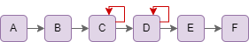
Варианты исправления: Определить причину зацикливания. Чаще всего это переадресация задачи между сотрудниками, ошибка информ.системы (если операция автоматическая), либо ошибка на этапе обработке данных (техническое дублирование).
Потенциальный эффект оценивается как сумма длительностей дублирующих операций, за исключением последнего появления, скорректированная на стоимость единицы рабочего времени сотрудника.
Возврат на предыдущий этап
Операция повторяется после исполнения одной (любой другой) операции, при этом после цикла промежуточная операция не возникает.
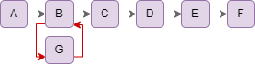
Варианты исправления: Доработка системы для автоматизации возникающей лишней операции G. Изменение логики процесса для встраивания операции G до начала работы над B.
Потенциальный эффект оценивается как длительность первого появления операции, скорректированная на стоимость единицы рабочего времени сотрудника.
Пинг-понг (иначе - зацикленность перехода)
Две операции, следующие друг за другом, повторяются. Зациклены обе участвующие операции и переход между ними. Чаще всего означает возврат документа или задачи на доработку.
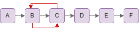
Варианты исправления: Уточнение требований к результату работ на этапе B. Внедрение внутреннего контроля качества, если между операциями B и C происходит смена подразделения. Обучение сотрудников и формализация регламента работы, если операция B выполняется разными сотрудниками, выявление лучших практик.
Потенциальный эффект оценивается как сумма длительностей дублирующих операций, за исключением последнего появления, скорректированная на стоимость единицы рабочего времени сотрудника.
Возврат в начало
При достижении некоторой операции в процессе (чаще всего контрольная функция) процесс возвращается к самой первой операции.
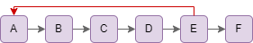
Варианты исправления: Внедрение промежуточных контрольных процедур, автоматизация этапов процесса и/или промежуточных проверок. Изменение порядка операций в процессе.
Потенциальный эффект оценивается как суммарная длительность всех дублируемых операций, скорректированная на стоимость единицы рабочего времени сотрудника.
Возврат в произвольный этап
Любое повторное возникновение операции, которое не было классифицировано ранее.
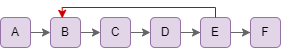
Варианты исправления: Внедрение промежуточных контрольных процедур, автоматизация этапов процесса и/или промежуточных проверок.
Потенциальный эффект оценивается как суммарная длительность всех дублируемых операций, скорректированная на стоимость единицы рабочего времени сотрудника.
Высокая длительность операции - это неэффективность, связанная со временем исполнения операции.
Отметить высокую длительность операции можно следующим образом:
Рассчитать длительность каждой операции;
Рассчитать среднюю длительность каждой уникальной операции;
Кластеризовать полученные значения для выявления операций, длительность которых значительно превосходит остальные.
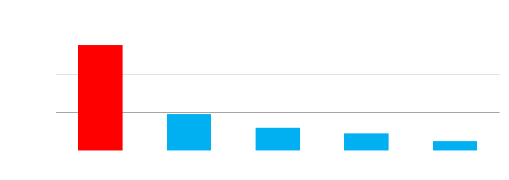
Согласно методологии выделяются следующие виды неэффективностей, связанные с высокой длительностью операцции:
Bottle neck
Операция признается узким местом, если:
Классифицирована как длительная;
Средняя длительность операции превышает медианную длительность (
activity_duration);Стандартное отклонение длительности операции (
std), нормированное на среднее стандартное отклонение по всем операциям, больше или равна порогу:$std >= 0,5$.
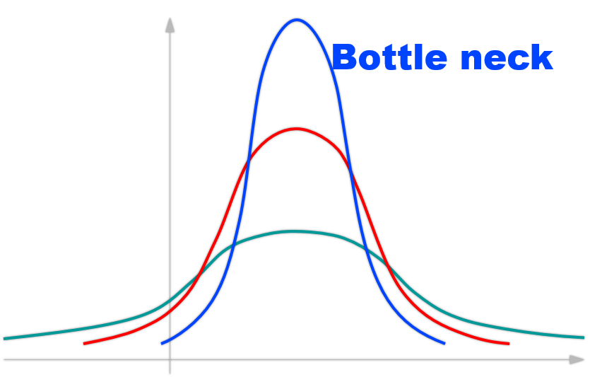
Варианты исправления: Перераспределение и выравнивание нагрузки между исполнителями.
Потенциальный эффект оценивается как суммарное излишне затраченное время для каждой операции, то есть как сумма длительности всех превышающих среднее значение для операции, скорректированная на стоимость единицы рабочего времени сотрудника.
Нестандартизованный (ручной) этап
Операция признается узким местом, если:
Классифицирована как длительная;
Средняя длительность операции превышает медианную длительность (
activity_duration);Стандартное отклонение длительности операции (
std), нормированное на среднее стандартное отклонение по всем операциям, меньше порога:$std < 0,5$.
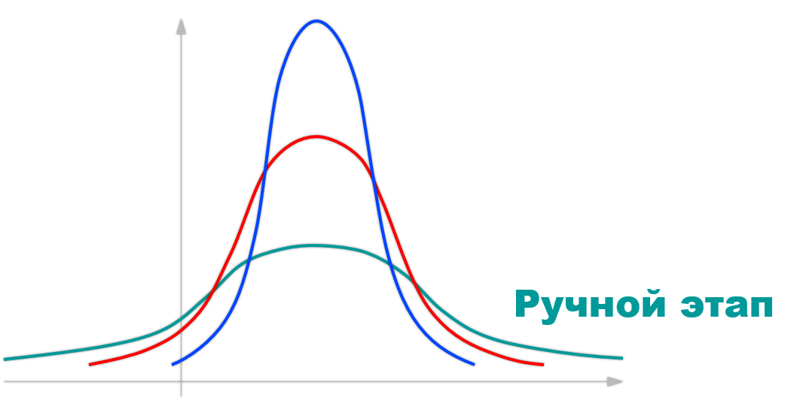
Варианты исправления: автоматизация части действий.
Потенциальный эффект оценивается как суммарное излишне затраченное время для каждой операции, то есть как сумма длительности всех превышающих среднее значение для операции, скорректированная на стоимость единицы рабочего времени сотрудника.
Разовые инциденты
Операция признается узким местом, если:
Классифицирована как длительная;
После кластеризации и удаления выбросов отношение средней длительности к медианной длительности лежит в диапазоне:
$0,9 < activity_duration < 1,1$.
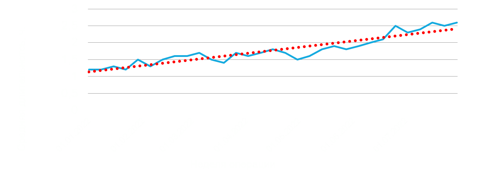
Варианты исправления: выявление, устранение и мониторинг причин инцидентов (например, ошибки системы, поломки оборудования или датчиков, зависимость от погодных условий и другие форс-мажоры).
Потенциальный эффект оценивается как суммарное излишне затраченное время для каждой операции, то есть как сумма длительности всех превышающих среднее значение для операции, скорректированная на стоимость единицы рабочего времени сотрудника.
Многократные инциденты
Операция признается узким местом, если:
Классифицирована как длительная;
Отношение средней длительности к медианной длительности операции (
activity_duration) больше порога:$activity_duration > 1,15$.Стандартное отклонение длительности операции (
std), нормированное на среднее стандартное отклонение по всем операциям, больше порога:$std > 0,5$.
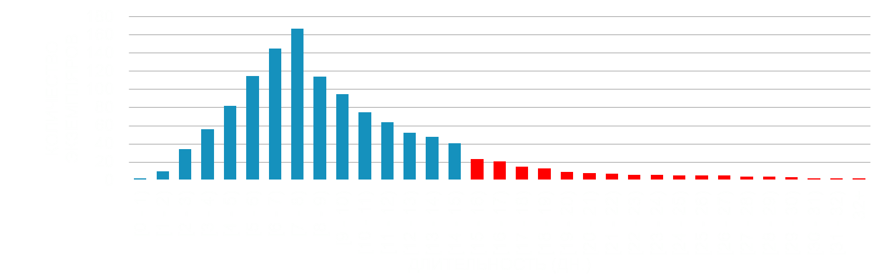
Варианты исправления: выявление, устранение и мониторинг причин инцидентов (например, ошибки системы, поломки оборудования или датчиков, зависимость от погодных условий и другие форс-мажоры).
Потенциальный эффект оценивается как суммарное излишне затраченное время для каждой операции, то есть как сумма длительности всех превышающих среднее значение для операции, скорректированная на стоимость единицы рабочего времени сотрудника.
Растет со временем
Иногда длительность операции может быть обоснована логикой доменной области. Однако часто бывает так, что проблема в динамике развивается не в длительнных операциях, о чем говорит угол наклона тренда для показателя длительность операции от 0 до 90 градусов. Угол наклона тренда получается при расчете RANSAC модели. Этот тип регрессионной модели выбран неслучайно, ведь он представляет собой стабильный метод оценки для зашумленных данных, то есть при наличии аномальных образцов в данных.
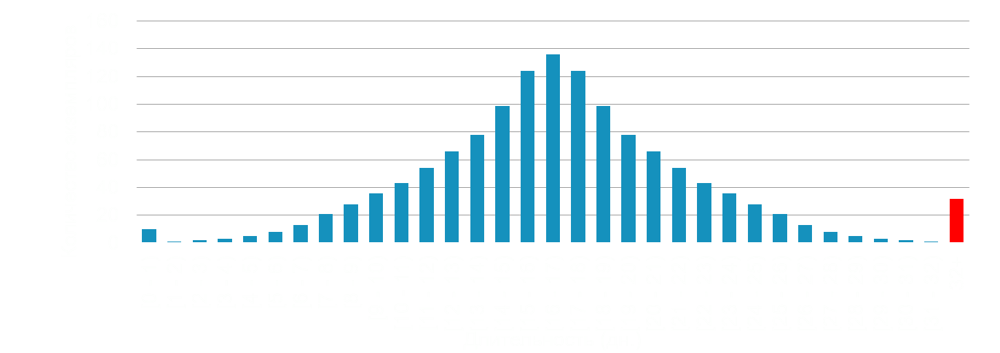
Варианты исправления: поиск и устранение корневых причин роста длительности.
Потенциальный эффект не рассчитывается, так как операция не представляет проблемы в текущий момент времени.
Влияние на процесс - это группа неэффективностей, связанная с поиском возникающих ошибок, возвратов и исправлений, а также нерегулярных этапов.
Ошибки системы
Текстовое название операции сопоставляется со словарем фраз, содержащим слова и словосочетания, означающие ошибку: ошибки системы, error, некорректный запрос, непредвиденная ошибка, неверные параметры запроса и другие.
Варианты исправления: идентификация сценария, при котором реализуется обнаруженная ошибка, доработка автоматизированной системы, настройка технического мониторинга АС для предупреждения и минимизации влияния подобных ошибок в будущем.
Потенциальный эффект оценивается как сумма длительностей, превышающих среднее значение для экземпляра, скорректированная на стоимость единицы рабочего времени сотрудника.
Возвраты и исправления
Текстовое название операции сопоставляется со словарем фраз, содержащим слова и словосочетания, означающие возврат на доработку или исправление: возврат, исправление, устранение замечаний, вернуть на доработку, некорректно заполнены поля, приостанавливаем до устранения замечаний и другие.
Варианты исправления: анализ причин необходимости возврата по сотрудникам и подзразделениям, от которых поступали задачи с ошибками, обучение сотрудников, составление или исправлении иснтрукции для исполнителей, интеграция информационных систем, внедрение RPA для минимизации ручных действий.
Потенциальный эффект оценивается как сумма длительностей, превышающих среднее значение для экземпляра, скорректированная на стоимость единицы рабочего времени сотрудника.
Нерегулярная операция
Для каждой операции рассчитывается вероятность ее возникновения, иначе - доля экземпляров, в которых встречается рассматриваемая операция.
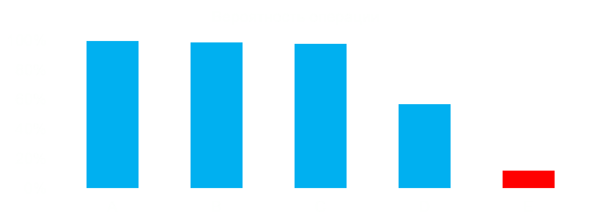
Операция признается узким местом, если после кластеризации всех операций по вероятности их возникновения какая-либо операция признается выбросом «слева», то есть возникает редко.
Потенциальный эффект оценивается как суммарная длительность нерегулярных операций, скорректированная на стоимость единицы рабочего времени сотрудника (не исключаются зацикленности).
Неуспех - это группа неэффективностей, связанная с оценкой причин экземпляров процесса, которые не завершились с успехом.
Ошибки системы
Текстовое название операции сопоставляется со словарем фраз, содержащим слова и словосочетания, означающие ошибку: ошибки системы, error, некорректный запрос, непредвиденная ошибка, неверные параметры запроса и другие.
Варианты исправления: идентификация сценария, при котором реализуется обнаруженная ошибка, доработка автоматизированной системы, настройка технического мониторинга АС для предупреждения и минимизации влияния подобных ошибок в будущем.
Потенциальный эффект оценивается как сумма длительностей неуспешных экземпляров, скорректированная на стоимость единицы рабочего времени сотрудника.
Возвраты и исправления
Текстовое название операции сопоставляется со словарем фраз, содержащим слова и словосочетания, означающие возврат на доработку или исправление: возврат, исправление, устранение замечаний, вернуть на доработку, некорректно заполнены поля, приостанавливаем до устранения замечаний и другие.
Варианты исправления: анализ причин необходимости возврата по сотрудникам и подзразделениям, от которых поступали задачи с ошибками, обучение сотрудников, составление или исправлении иснтрукции для исполнителей, интеграция информационных систем, внедрение RPA для минимизации ручных действий.
Потенциальный эффект оценивается как сумма длительностей неуспешных экземпляров, скорректированная на стоимость единицы рабочего времени сотрудника.
Структурные причины
Отсутствие критериев успеха (например, ключевой операции) по другим причинам.
Алгоритм в основе модуля#
Каждая из метрик в списке типовых неэффективностей имеет свой алгоритм расчета и вычисляется независимо от других. Далее происходит агрегация результатов всех метрик, а также вычисление потенциального эффекта с учетом устранения возможных пересечений и включений эффектов друг в друга для корректного исчисления суммарного эффекта.
Технический ландшафт#
Ниже представлен список метрик, в расчете которых участвуют алгоритмы машинного обучения:
Высокая длительность операции: Разовые инциденты
Используется один из самых популярных и устойчивых алгоритмов кластеризации KMeans. В общих чертах алгоритм состоит из трех шагов. На первом этапе выбираются начальные центроиды (например, случайным образом из датасета). Шаг за шагом алгоритм, сдвигая центроиды, пытается объединить все точки в k групп так, чтобы расстояния между объектами внутри каждой группы были минимальны.
Высокая длительность операции: Растет со временем
Используется регрессионный алгоритм для оценки угла наклона тренда для показателя длительности.
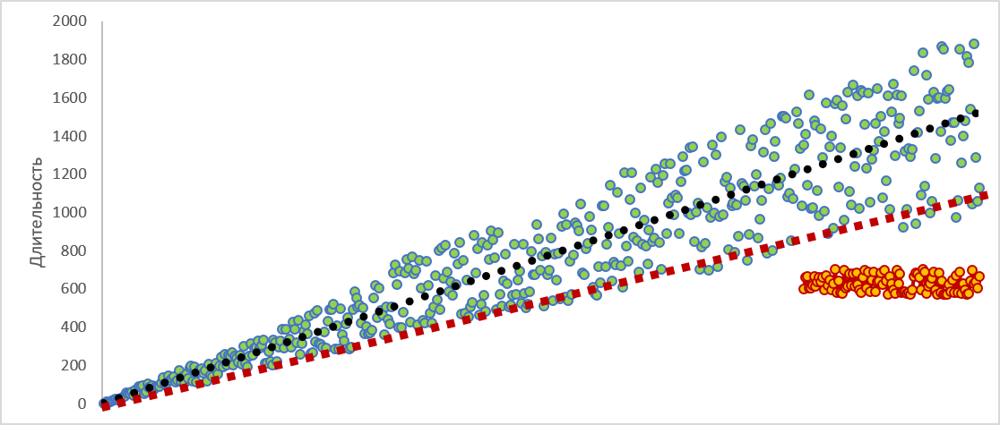
Обратите внимание на простую демонстрацию. Красная линия на графике показывает, как бы прошел линейный тренд (по методу наименьших квадратов, иначе - МНК). Так происходит потому, что при МНК все наблюдения одинаково важны и модель в этом случае оказывается скомпрометированной из-за наличия в данных отклонений (красные точки на графике). Отклонения могут быть вызваны многими факторами, включая ошибки измерений, и эти отклонения оказывают непропорционально большое влияние на расчетную модель. Необходимость в более надежном методе привела к разработке алгоритма RANSAC (черная линия на графике). Его принцип работы довольно прост: для случайного количества точек в наших данных строится модель. Затем мы проверяем, насколько хорошо весь набор данных соответствует модели. Мы повторяем эти шаги до тех пор, пока не найдем модель, которая хорошо соответствует нашим данным. В этом процессе мы отмечаем все точки, которые не близки к ней, как выбросы.
Влияние на процесс: Нерегулярная операция (OneClassSVM)
Во многих приложениях требуется возможность определять, относится ли наблюдение к тому же распределению, что и существующие наблюдения, или его следует рассматривать как другое (это выброс). Аномалией в данных называют наблюдения, удаленные от других, как правило - от регионов высокой концентрации других точек. Одним из таких методов является One Class SVM, который и используется нами для поиска выбросов «слева», то есть - для поиска нерегулярных операций.
Прочие метрики рассчитываются без участия ML алгоритмов.